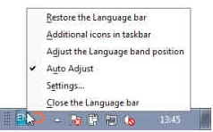
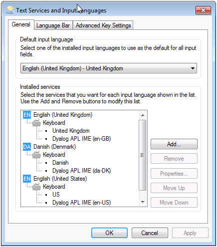
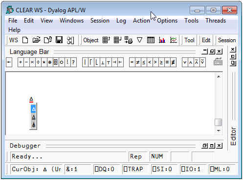

The following description uses screenshots taken from a Windows 7 PC with three Input Languages configured for the current user: English (United Kingdom) - the default Input Language, Danish (Denmark) and English (United States).
The Dyalog Unicode IME is added as an additional service to all keyboards defined to the user and the administrator at the time that the IME was installed.
For each IME the underlying keyboard layout file will be the same as that defined for the base keyboard. The layout file is a DLL created by Microsoft.
The language specified in the description of the IME is the name of the IME translate table that has been associated with the IME for the specific keyboard. In the case of languages not supported by the IME the keyboard will default to en-US. With the IME as supplied with Version 13.2 altering this text requires editing the appropriate Registry value.
The IME may be configured from within APL or from Windows.
To change the properties of the IME go to Options/Configure/Unicode Input tab and select
Configure Layout:
Right click on either the Input Language icon or the Keyboard layout icon in the TaskBar and select Settings:


To alter the configuration of any of the installed IMEs, select that IME and click on Properties:

The translate table defines the mapping between APL characters and the keystrokes that generate those APL characters. It is possible to alter the mapping or to create support for new keyboards by altering the translate table, or by selecting a different translate table. See the IME User Guide for more details.
In the original implementations of APL, many of the special symbols could only be generated by overstriking one character on top of another as is reflected in the appearance of the glyphs. For example, the symbol for Grade Up (⍋) is actually the symbol for delta (∆) superimposed on the symbol for vertical bar (|)
In Dyalog APL such symbols can be generated either by a single keystroke, or (in Replace mode) by overtyping one symbol with another. For example ⍋ may be generated using Shift+Ctrl+4, or by switching to Replace mode and typing the three keystrokes Ctrl+h, Left-Cursor, Ctrl+m.
Using the Dyalog Unicode IME the character can also be entered by pressing Ctrl+Bksp, Ctrl+m, Ctrl+h. Note that Ctrl+Bksp is the default Overstrike Introducer Key (key code OS).
With this option selected, when the character following the Overstrike Introducer Key is pressed, a popup box displays all the overstrikes which contain the last character typed: in the example below Ctrl+Bksp has been followed by Ctrl+h:

Note the fine (red) line under the ∆ in the Session window. This indicates that an overstrike creation operation is in progress.
The input of the symbol ⍋ can be completed by pressing Ctr+m, or by moving the selection up and down the pop-up list using Cursor-Up or Cursor-Down
With this option selected, the IME identifies characters which are part of a valid overstrike, and when such a character is entered into the session, begins an overstrike creation operation. This mode is experimental in the IME supplied with Version 13.2.